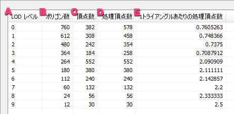

お使いのブラウザは JavaScript が使用できないため、本ドキュメントの一部機能が無効になっています。
JavaScript が無効の環境では目次を使用することができません。JavaScriptの実行が許可された状態で閲覧してください。
選択したモデルファイル ( .fmd ) にメッシュ LOD ( Level Of Detail ) が含まれていた場合に、レベルごとのポリゴン数や頂点数の情報を表示します。
